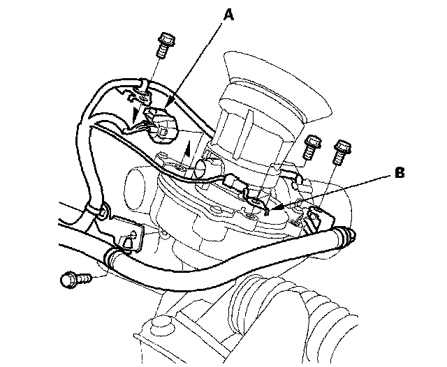
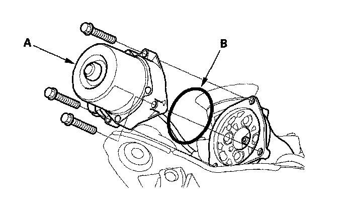
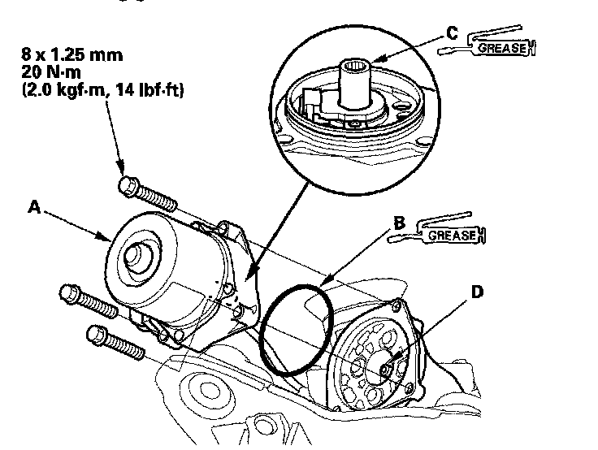
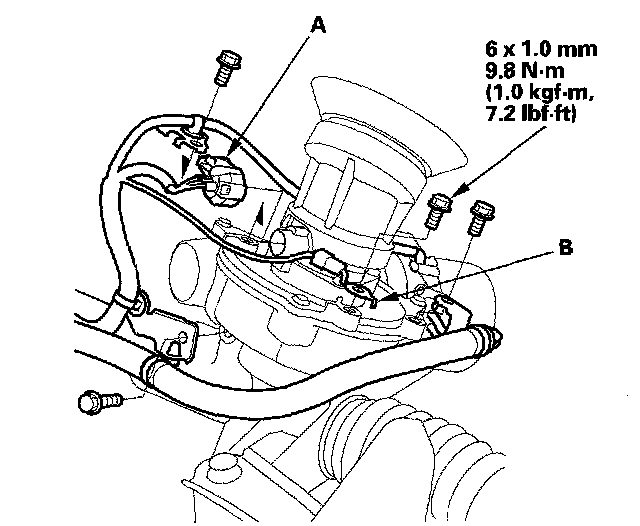

Power Steering Motor: Service and Repair
Motor Removal and InstallationRemoval
NOTE: Do not allow dust, dirt, or other foreign materials to enter the steering gearbox.
1. Remove the steering gearbox.
2. Disconnect the torque sensor 3P connector (A) from the steering gearbox, then remove the harness clamp bolts and the ground terminal (B).

3. Remove the motor (A) from the steering gearbox, then remove the O-ring (B) and discard it.

Installation
1. Clean the mating surface of the motor (A) and the steering gearbox.

2. Apply a thin coat of silicone grease to the new O-ring (B), and carefully fit it on the motor.
3. Apply grease (Shell steering gear grease or Honda's equivalent steering gear grease) into the motor shaft (C).
4. Install the motor on the steering gearbox by engaging the motor shaft and the worm shaft (D).
5. Before tightening the bolts, turn the motor two or three times to the right and left about 45°. Make sure the motor is evenly seated on the steering gearbox, and that the O-ring is not pinched between the mating surfaces.
6. Connect the torque sensor 3P connector (A) to the steering gearbox, then install the harness clamp bolts and the ground terminal (B).

7. Finish the installation, and note these items:
^ Make sure the torque sensor 3P connector is properly connected.
^ Make sure the motor and the EPS wires are not caught or pinched by any parts.
8. Install the steering gearbox.